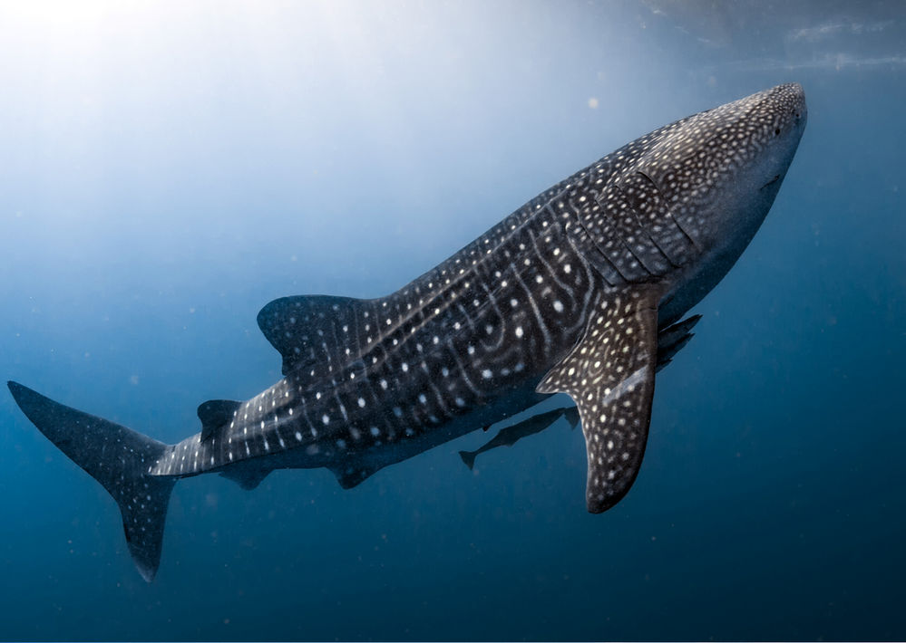
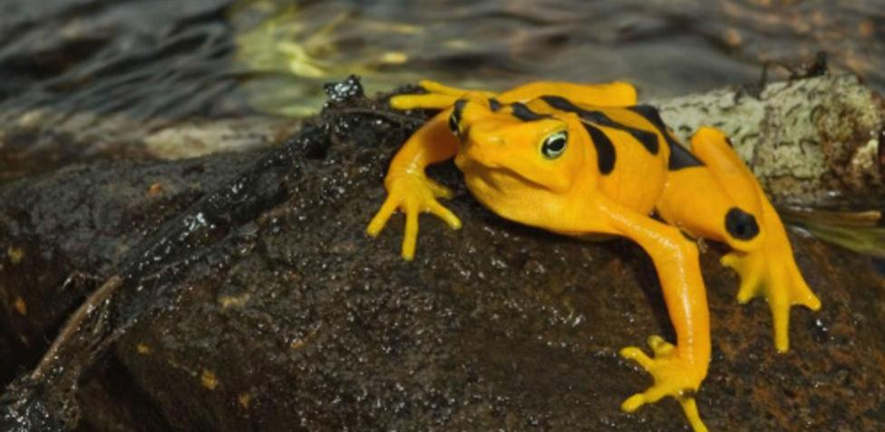
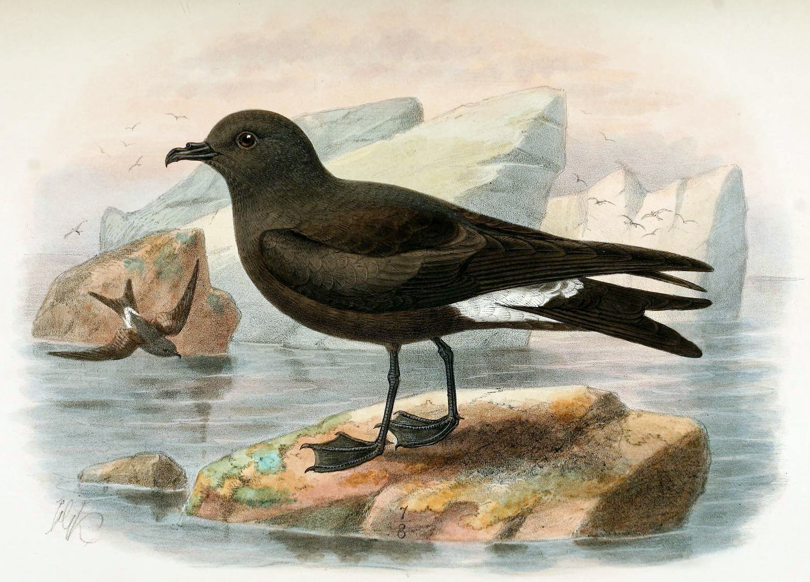
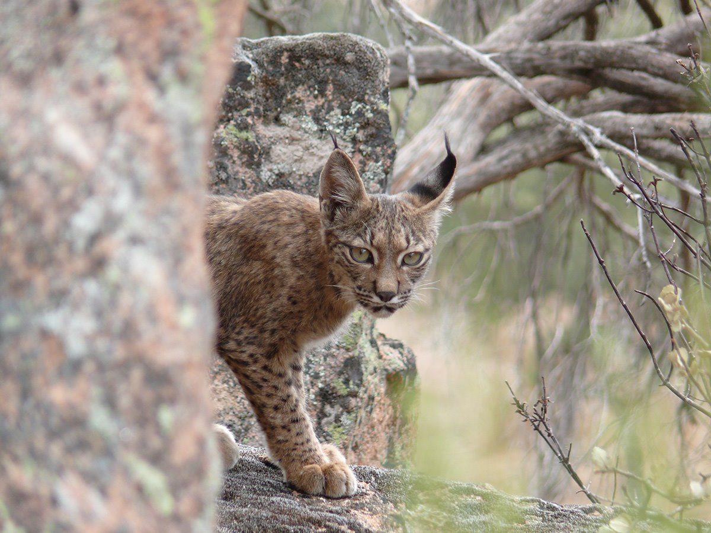
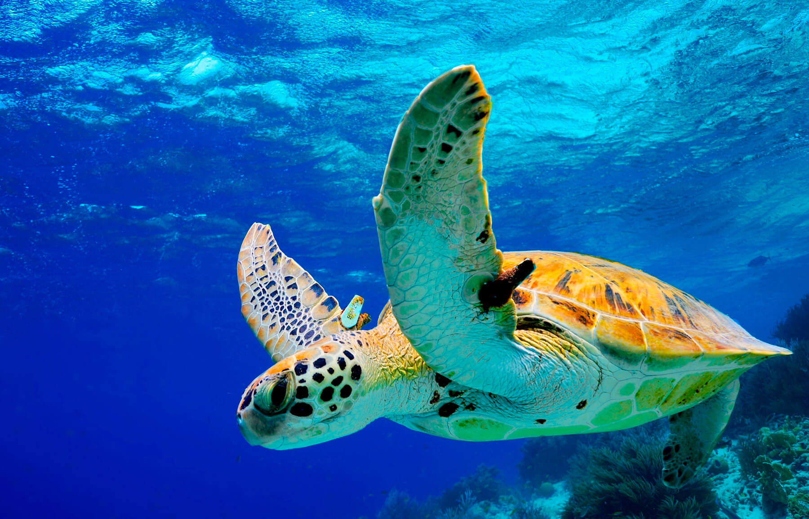

Animales en Peligro de Extinción
Acuaticos
Anfibios
Aves
Mamíferos
Reptiles
Acciones para la Protección y el cuidado de los Animales
El impacto de la acción del ser humano en los ecosistemas está provocando que numerosas especies desaparezcan, lo que genera un daño irreversible tanto en la biodiversidad como en el medioambiente.
Acuáticos

El Tiburón Ballena
Es una especie de elasmobranquio orectolobiforme,único miembro de la familia Rhincodontidae y del género Rhincodon; es el pez existente más grande del mundo, con aproximadamente 12 m de longitud. Presenta una alimentación por filtración. Habita en aguas cálidas tropicales y subtropicales. La principal amenaza del tiburón ballena es la pesca excesiva o sobrepesca, al igual que para otras especies.
Anfibio

Rana Dardo Venenosa
Phyllobates terribilis, esta especie pertenece al orden Anura y es endémica de las costas del Pacífico de Colombia y Panamá, donde ocupa los bosques lluviosos y selvas húmedas. Es uno de los animales más venenosos que existen (cada rana posee veneno para matar a cerca de diez personas) y se caracteriza por presentar colores brillantes y llamativos (tonos de verdes, naranjas y amarillos) que advierten sobre su toxicidad. Son pequeños, con poco más de 5 cm de longitud y son trepadores, para lo cual se ayudan de discos que poseen en sus dedos y con los que se adhieren a las plantas. Esta rana se encuentra en peligro de extinción debido a que sus poblaciones ocupan territorios muy pequeños, por lo que su principal amenaza es la pérdida de su hábitat por destrucción de los bosques y selvas.
Ave

Petrel de Guadalupe
Esta especie lleva años sin ser vista, sin embargo, faltan estudios exhaustivos para poder establecer su extinción, por lo cual se encuentra categorizada en peligro crítico (posiblemente extinta). Se estima que la población decreció drásticamente por ser presa de gatos salvajes, quienes cazaban estas aves de manera exagerada, además, la destrucción del hábitat de anidación por parte de cabras también tuvo influencia. Los ecosistemas terrestres (como bosques de suelos blandos) y marinos eran los espacios para su desarrollo.
Mamífero

Lince Ibérico
Lynx pardinus,Con pinta de gato salvaje, los linces habitan únicamente en el hemisferio norte. Se conocen cuatro especies diferentes, tres de ellas gozan de muy buena salud, mientras que la cuarta es una de las especies más amenazadas en España y en el planeta: el lince ibérico. Se calcula que tan solo quedan 404 ejemplares, una población muy difícil de recuperar debido al deterioro de su hábitat y de su principal base alimenticia, los conejos.
Reptil

Tortuga Verde Marina
Habita en el cinturón tropical y subtropical alrededor de todo el planeta. Ya se ha extinguido en las islas Caimán y en Mauricio, y también se estima que en Israel ya ha desaparecido. Aún así, a nivel mundial, se encuentra en peligro de extinción. Su principal amenaza empieza cuando pone los huevos, ya que, al igual que su carne, es ingerida de modo ilegal.
Acciones para la Protección y el Cuidado de los Animales